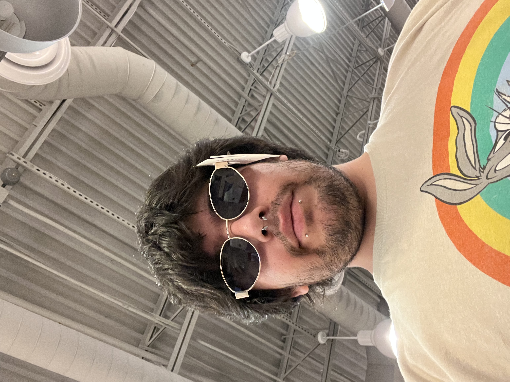
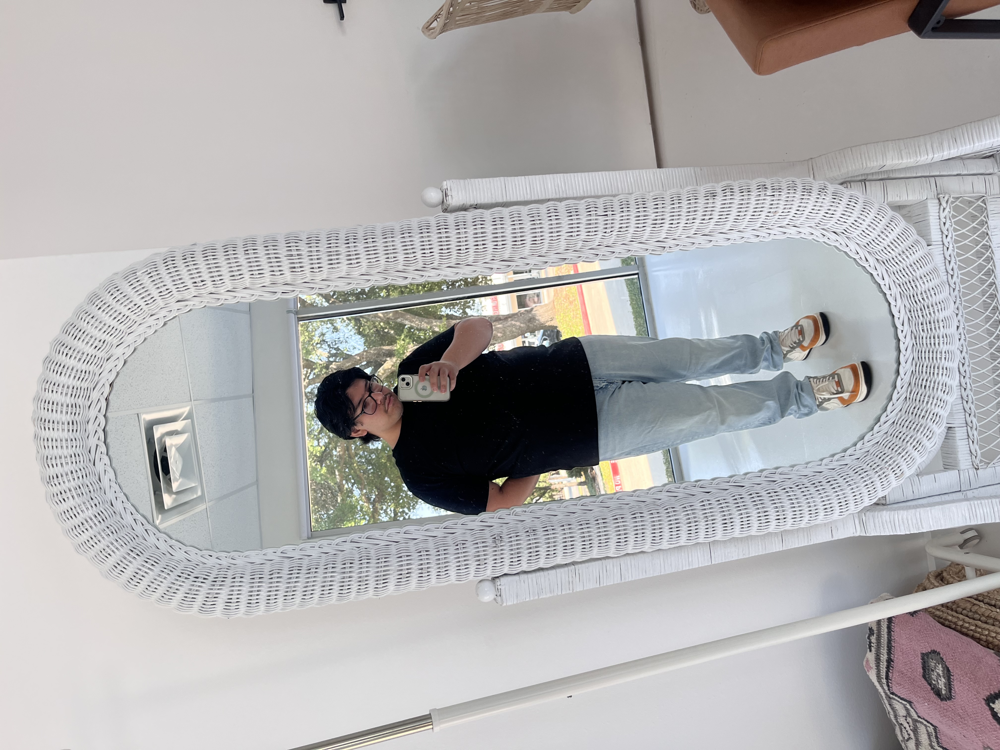
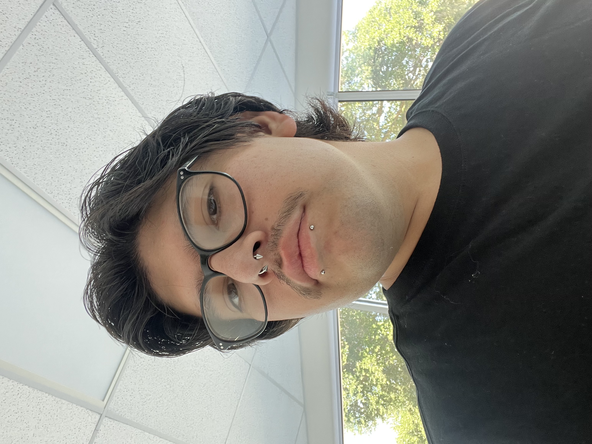

Weeetuesday selfie photo collage
Hello, My name is Enrique aka Weeetuesday. These are some of the photos of me that i feel like stand out the most.
when taking these and selecting them i feel like it shows a part of me that is self-conscious of how I see my self.
These are some of my favortie pictures that i have taken trough my phone.

A GOOOD POSE FOR THE PICTURE!
This is one of my first photos i have been fully comfortable and prepared for
since i was attending a wedding i had to get my hair combed up and styled.
I usually dont do my hair its always the same from the beginning of the morning till the end.

AWESOME GLASSES
This is a selfie i took at american eagle
i wanted to put on here since i dont want to have a full serious portfolio
some comedy in this page is always good.
i really enjoy these types of pictures becaause i wear glasses for these past 7-8 years.
i dont use shades nor have any at home so when we are out in the store
i like to try some on just to see how i would look with them.

LIKE MOM SAID NO FAVORITES!
This by far is one of my favorites since we where already having a proffesional photographer take our photos.
I decided to start taking some of my own just because the lighting was great; The place my wife chose was great
These type of photo is a good way to get my self out of my comfort zone. I persoanlly deal with body dysmorphia
which is why i never really took pictures of my self.

A GOOOOOD SELFIE NEVER HURT ANYONE!
this was also at the same place as the picture before, but why add two photos of the same time and place?
these are honeslty one of my top pictures i have added to my website portfolio. I feel like they are expressing me.
My pirecings are also showing and i like my piercings HAHA-nervous laugh.
i have some snake eyes but i didnt like any of the ones i had taken that had my tongue piercing in.